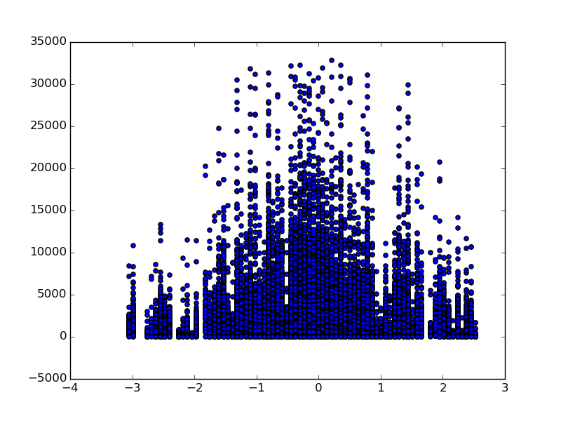
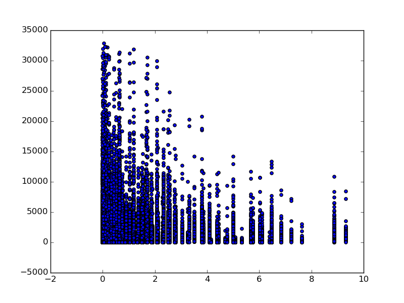

Figure
1: Histogram of hourly entries. Figure 1 (a) shows the count of the
entries vs. the number of entries. Figure 1 (b) shows the same
histogram, but normalized, such that the hight of all bins sums up to one.
Analyzing the NYC Subway Dataset
Do more people ride the NY Subway when it rains?
Author: Andrei Iusan
D. M. Diez, C. D. Barr, M Çetinkaya-Rundel, OpenIntro Statistics, Second Edition
H. B. Mann, D. R. Whitney, On a Test of Whether one of Two Random Variables is Stochastically Larger than the Other The Annals of Mathematical Statistics, Volume 18, Number 1 (1947), 50-60.
Stéfan van der Walt, Jarrod Millman, Statsmodels: Econometric and Statistical Modeling with Python, Proceedings of the 9th Python in Science Conference, 57-61 (2010), http://statsmodels.sourceforge.net/
Jones E, Oliphant E, Peterson P, et al. SciPy: Open Source Scientific Tools for Python, 2001-, http://www.scipy.org/
Wes McKinney. Data Structures for Statistical Computing in Python, Proceedings of the 9th Python in Science Conference, 51-56 (2010), http://pandas.pydata.org/
John D. Hunter. Matplotlib: A 2D Graphics Environment, Computing in Science & Engineering, 9, 90-95 (2007), http://matplotlib.org/
A statistical test can be used to determine if weather affects ridership in the NY Subway system. First the data is divided in two datasets: one called Sunny containing all entries where rain equals 0 in the dataset, and one called Rainy, containing all entries where rain equals 1. In order to choose the appropriate statistical test, one can plot a histogram of the data (Figure 1). Figure (a) shows a histogram of hourly entries, where the height of the bars represents the count of entries in the dataset, and on the x axis, the number of entries. The plot represents the number of times that any subway unit records entries in an interval (e.g. the number of times that a subway unit recorded 0-100 entries). But since there is more data for clear days than rainy days, the histograms have different scales. There are more entries for clear days on our histogram not necesarily because people ride more during clear days, but because there are more samples for clear days in our dataset than for rainy days. This issue can be resolved by normalizing the histogram. The resulting histogram is presented in Figure 1 (b).
The histogram is strongly right skewed, so we need a non-parametric statistical test to compare the two distributions. We can apply the Mann-Whitney U test to answer the question. The Null Hypothesis can be formulated as “There is no difference between the two datasets” and the Alternative Hypothesis as “The values in the dataset containing entries during the days with bad weather conditions came from different populations.” We can rephrase the Null Hypothesis: The number of people riding the subway is roughly the same regardless of the weather conditions, and the Alternative Hypothesis: Rain affects the average number of people that ride the subway. For this we compute a two-sided test.
Null Hypothesis: μSunny = μRainy
Alternative Hypothesis: μSunny ≠ μRainy
Significance level p=0.05
Statistical test: Mann Whitney U Test, two sided.
We can see from the hystogram that the data is not normally distributed. We therefore need to apply a non-parametric statistical test. We need to check the assumptions of the statistical test that we want to use in order to decide if that test is applicable to our dataset. We analyze the two datasets with respect to Mann-Whitney U test assumptions:
Assumption 1: The dependent variable should be ordinal or continuous. Our dependent variable is hourly entries. This can be considered continuous.
Assumption 2: The independent variable should be categorical. In our case, the independent variable is weather it rains or not. We used this variable to split our data in two datasets.
Assumption 3: The observations should be independent. This is also true, the observation of number of entries in one day does not influence other observations.
Assumption 4: The distribution of values from the dataset should have the same shape. This can be observed in Figure 1.
I applied the test and I obtained the following results:
μSunny = 1845.53 entries
μRainy = 2028.19 entries
U = 1.536 * 108
p = 5.48 * 10-6
where μSunny represents the mean of the entries over sunny days, μRainy represents the mean of the entries over rainy days, U represents the U statistic of the Mann Whitney U test, and p represents the p-value for a one-sided Mann Whitney U test.
The p-value is considerably lower than the significance level, so the Null is rejected.
The p-value represents the probability of obtaining a variation like the observed one ore more extreme, given that the null hypothesis is true. If this value is low, it is unlikely (although possible, with probability p) that the null hypothesis is true. Given that the p-value is small, we can reject the null hypothesis and conclude that there is convincing evidence that the alternative hypothesis holds.
I implemented OLS using statsmodels for my regression model.
I used 'precipi', 'fog', 'wspdi', the square of 'pressurei' called 'pressure2' and dummy variables for Subway unit, day of week and hour.
By analyzing the data, we can see from the plots in Figure 2 that the moment in time is the strongest predictor. From Figure 2 (a) we can see that the weather affects the ridership slightly, but the number of entries follows the same daily pattern. There is also a weekly pattern that can be observed in Figure 2 (b) and Figure 3.
Another important aspect is that the relationship between time-of-day and number of entries is nonlinear. Therefore, using linear regression with 'hour' or 'day_week' as a feature will not work properly. It is better to aggregate the values in time intervals and use dummy variables for those intervals. I included dummy variables for subway unit, weekday and time of day.
In order to select the best variables that could be used as predictors, I generated scatterplots of all predictor variables (of explanatory variables) versus the number of entries. It is best to include in a linear model only variables that follow an approximately linear pattern with respect to the response variable. I observed that temperature does not follow a linear pattern so I excluded it. Also, pressure appears quadratic (Figure 4a). I dropped the pressure variable and replaced it with the squared value of the pressure (Figure 4b).
It is interesting to note that since we have a very limited dataset, the average for the day of Monday is pulled down by the national Memorial Day that is celebrated on the last Monday of May. This suggests that perhaps a more accurate prediction could be made if we take into account not only the weekday, but also the day of the year, or perhaps another binary variable that describes the day as being a national holiday.
I obtained an R2 value of 0.54
The output variable (or response variable), the number of entries for a particular subway unit at a particular moment in time varies from 0 to 35,000 entries. Due to this fact, the weights of different predictors have values that vary very much. The weights for weather values are the following:
precipi: -117.366997884
fog: -80.4189014166
wspdi: 33.5845241393
pressure2: -20.6362939134
On the other hand, the theta values for the dummy features are usually on the order of 1012 to 1014.
For my model: R2 = 0.545.
A distinction has to be made between modeling and predicting.
Modeling is the process of describing theoreticaly a phenomena (usually a natural phenomena). It involves finding a mathematical description for the real phenomena. If the model is accurate, it can be used to predict future events. As a classic example, let's consider the simple Newtonian mechanics model. Mechanics describes the interactions between physical objects. The model can be used to predict the trajectory of a cannon projectile for example. However, the same model is unfit for the GPS. In this case, due to the higher speed and the high accuracy required, a more complex model has to be used (relatistic mechanics).
Prediction involves using a model to predict future events. Prediction is related to modeling, however, measuring the prediction accuracy of a model is much harder than measuring fitness. In order to measure fitness of a model, one has to compare the prediction of the model with the real data. For prediction purposes, the real value is unknown at the moment the prediction is made.
This model describes the data to some extent, given the R score of 0.54. However, the R score alone does not tell us anything about the model's predictive value. In order to evaluate the predictive value of a linear regression model for this dataset we need to set up a different experiment.
The R2 value can still be used to measure prediction accuracy, but I followed a procedure that is described below:
Shuffle the data
Split the data in 10 chunks (or any N chuncks, for this experiment I used N=10)
for every chunk:
test_set = samples[chunk]
train_set = samples – test_set
train the model using the train_set
compute predicted values for test set
compute R2 for test set
Compute R2 average and std
The results of this experiment are the following:
R2mean= 0.549
R2std= 0.039
I obtained 10 values for R2. In order to compute a confidence interval, I used the t distribution. (The t distribution is required rather than the normal distribution because we have only a small sample.) For our experiment, there are 10 samples, therefore I applied the t test with 9 degrees of freedom.
The 95% confidence interval for R2 is: (0.46, 0.63).
This is the code that led to this result:
from scipy.stats import t
import numpy as np
# ...
indeces = np.array(range(len(features)))
np.random.seed(1)
np.random.shuffle(indeces)
k_cv = 10
test_set_len = len(features)/k_cv
R_sq_array = []
for k in range(k_cv):
train_i = indeces[range(0,k*test_set_len)+range((k+1)*test_set_len,len(features))]
test_i = indeces[range(k*test_set_len,(k+1)*test_set_len)]
model = sm.OLS(values[train_i], features[train_i])
results = model.fit()
predicted_values = results.predict(features[test_i])
r_sq = compute_r_squared(turnstile_weather['ENTRIESn_hourly'][test_i], predicted_values)
R_sq_array.append(r_sq)
log.write(str(r_sq)+'\n')
Rm = np.mean(R_sq_array)
Rsig = np.std(R_sq_array)
conf_interval = t.interval(.95,len(R_sq_array)-1,loc=Rm, scale=Rsig)
Figure
1: Histogram of hourly entries. Figure 1 (a) shows the count of the
entries vs. the number of entries. Figure 1 (b) shows the same
histogram, but normalized, such that the hight of all bins sums up to one.

Figure
2: These plots describe ridership by hour (figure a) and by day of
week (figure b).

Figure
3: Total entries by day.

Figure
4a: Scatterplot of pressure vs Entries

Figure
4b: Scatterplot of pressure2 vs Entries
From the analysis conducted so far we can state that more people ride the NYC subway when it is raining. This can be observed first only by computing the average hourly entries for the rainy vs. non-rainy days. Although this gives as a clue as to the answer of this question, we cannot state this answer only by this computation. To properly answer the question we need to decide whether the difference is large enough to be significant. In other words, is the difference due to rain, or could it be due to chance that for our given dataset, more people used the subway during rainy days?
Statistics helps us answer the question on a more scientific basis. By using a statistical test we can answer the question: How probable is it that the observed difference is due to chance? As we have seen in Section 1, the p-value is very low, so we can safely conclude that the observed difference is not due to chance, and that rain does indeed affect NYC Subway ridership.
By using linear regression we can attempt to model the observed ridership and predict, based on the moment in time (day and hour), and weather, the approximate number of riders. The implementation of this model gave an R2 value of 0.54. This is significant enough to suggest there is a correlation between the input variables and the output, and this correlation can be used for predictive purposes.
The dataset used for this project included entries only for the month of May. Therefore, the computed model has limited use, it may be unsuitable for predicting ridership during winter or hot summer days. Also, the granularity of the values is quite large. The entries are summed over 4 hour intervals. It may be possible to obtain a more accurate prediction if we have entries for every hour, or for every 10 minutes, or even in real time, for example having a dataset with every entry and the timestamp associated.
It is not clear whether all the relations are linear. It may be the case that some relations are non-linear. As an extreme example, it may be the case that when temperature is very low, more people ride the subway than when the temperature is warm, but also when temperature is very high, more people may ride the subway. It should be noted that this is only a hypothesis based on intuition, not a tested fact, but it is very likely that the model implemented here is not very accurate and that it is not suited to represent or predict ridership in other periods of the year.